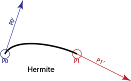
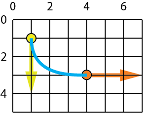

Page 11: Interpolation and Hermite Cubics
Hermite interpolation forms for Cubics
With a cubic, we have 4 coefficients we can control, so it should make sense that we can choose 4 things to specify and use those to determine the 4 coefficients. If we specify fewer than 4 things, there will be choices (it is underdetermined). If we specify more than 4 things, we may not be able to meet them all.
With cubics, we may want to specify the positions and tangents (first derivatives) at the beginning and end of the segment. This gives us 4 values to specify (so it’s the right number). This is convenient since it allows sufficient control to get continuity. We’ll talk about other things to specify below. But this form - value and 1st derivative at beginning and end - is sufficiently important that we will explore it carefully.
The idea of specifying a curve by its values (and derivatives) at its beginning and end is sometimes called Hermite interpolation. Charles Hermite was a French mathematician (I believe it is pronounced as “her meet” because the name is French, so “i” sounds like “ee”; or, since in French the “H” is not voiced, maybe “err meet” to make my French teacher happy) who studied polynomials and interpolation. He has many concepts named after him.
The Hermite cubics we use in graphics are part of a general set of interpolating forms where we specify values that the curves have. With Hermite forms, we specify the values and derivatives for the curve at the beginning and end. We can have Hermite polynomials of different degrees. For example, a first-degree Hermite polynomial is a line segment, where we specify the values at the ends. A quintic Hermite (5th degree) would specify the value and the first two derivatives at each end of the curve. In class, we will only consider cubics (and lines, but we’ve done them already).
For Hermite cubics, we specify the value of the curve at the beginning, the value of the curve at the end, the first derivative (tangent vector) of the curve at the beginning, and the tangent vector (first derivative) of the curve at the end.
{kind=link}

Here we denote the first point as , the second point as , and their associated derivatives as and . These are all specified values, including the derivative of the curve at the beginning and end.
Even though the derivatives are vectors, we still refer to them as control points. Since it is a cubic, it has 4 control points.
We can derive formulas for the coefficients (the ) from the Hermite control points. This is done in the spline notes (and book) - but we won’t ask you to do these derivations in class.
Here are the equations:
Writing it out like this, it should be clear that , , etc.
The notes and book use matrix notation for writing out these equations. The connection to matrix notation becomes clearer if we format the equation a little differently:
This allows us to write the equation as two matrix-vector multiplies:
This is one of the few times in class where we actually do a left-multiply of a row vector with a matrix.
Basis Functions
We can re-organize the equations from the previous box to group terms by control points, rather than by parameter powers. Note that this is just the equation above, with the terms regrouped:
Notice that we now have a function of for each control point. We could re-write this as:
These new functions are called basis functions.
Basis functions are a very convenient way to write curve equations.
Polynomial curves can be written as basis functions. Writing them this way makes it clear that we are taking a linear combination of the control points, where the weights of the combination are determined by the (potentially non-linear) basis functions.
Practice with Hermites
To check that you can use this, try to compute the following:
Consider a cubic curve that has its beginning (i.e., ) at the point (1,1), and its end at the point (4,3). The derivative at the beginning is (0,3) and the derivative at the end is (3,0). Can you sketch what this curve looks like? We know where the curve starts, we know what direction the curve goes at the beginning, we know where the curve ends, and we know the direction it is going when it gets there. From this we can “sketch” - connecting these things, guessing what happens in between. Here is a sketch (and it is a sketch - when I created the curve I exaggerated the derivative magnitudes):
{kind=link}

Back in the days before online assignments and exams, we asked students to do a lot of curve sketching (remember pencil and paper?). It is important to have an intuition for what the curves should look like. It is a little trickier for Hermite curves because the scale of the derivative is not clear.
Since you probably peeked at my sketch before you tried the last one, here is another. The endpoints are the same (1,1) and (4,3), but the derivatives are (3,0) and (3,3). Draw a sketch.
It is too hard to collect your sketches in a workbook. What we can do is ask you to compute the value (position) of this curve at . You’ll need to use the equations above. Notice that you don’t need to convert the curve to canonical form. You can just use the basis functions. Put your answer into these type-ins.
The curve @ 0.5 is: ,
Hermite Intuitions
To give you an intuition for what the Hermite curve feels like, here is a demo (I had Gemini write it).
On the left you see a Hermite cubic segment. You can control the endpoints. You can control the tangent points with “handles” (the tangent is defined as the vector between the points). Get a sense of how the positions and tangents control the shape of the curve.
Hermite vs. Bézier Representations
These are two views of the same curve. Drag any point to see how the mathematical definitions relate. Notice how moving the Start Point affects the curve differently in each view.
On the right is a cubic Bezier curve. You may have seen these in a drawing program (such as Adobe Illustrator). We will learn about those later in the workbook. But for now, notice that these two forms of cubics are very similar, but different.
The control points for each curve are moved so that the curves are identical (they are both the same cubics, just specified in different ways).
Other Cubic Forms?
The Hermite form - value and 1st derivative at both ends - is one convenient way to specify an interpolating cubic.
You might wonder - what about other options? Other things could work:
- Specify 4 points to interpolate (, , , and )
- Specify all the derivatives at the beginning
- Specify the first and second derivatives at the beginning and the positions at both ends
- Specify the positions at the beginning, end, and middle (), and the derivative at the middle
- And many others
All of these make nice practice problems for understanding how to derive curve forms. We used to do these in graphics class - but don’t worry, we won’t make you do the derivations.
What is important is that a few forms turn out to be very useful. And we’ll just use those.
For interpolation, Hermite forms are very useful because they give us nice control and easy continuity (we can specify positions and derivatives to match the neighboring segments).
If you’re wondering, curve #1 (interpolate 4 points) turns out to be less useful than Hermites. While it seems nice to specify 4 points to interpolate, it is more useful to be able to control the derivatives to get continuity. If we need to interpolate more points, we usually use more segments. On the next page we will learn about a way to adapt Hermite forms to do point interpolation. You can see a demo at Cardinals 2: Understand Interpolation. (It is compared with Cardinal Splines, which we will explain on the next page). For now, you can try the “polynomial interpolation” - and note how when you move the points around, it is hard to control what happens between the points.
Interpolating More Points
Hermite cubic segments let us interpolate two points (the ends) with good control over the “shape” of the curve by specifying the derivatives in between.
If we have more than 2 points, we can connect multiple Hermite cubic segments together. They share the positions and tangent at the meeting point.
For example, to interpolate 3 points , , , we will create a cubic segment between each neighboring pair. Segment 1 will connect between and , and segment 2 will connect between and . You can see this extends for any number of points.
This strategy of making a complicated chain (through many points) by linking simple pieces has many advantages. We can make the curve C(0) by matching the endpoints, and C(1) by matching the derivatives. Each piece is simple (it’s only a cubic). And each piece is independent - each segment only depends on its endpoints. Other parts of the curve (farther away) don’t matter. This is an important property that we call “locality”. (Changes that you make only affect a local neighborhood around where you make the chain).
The downside is that we need to specify the derivatives at each point. One possibility is to view this as part of the shape specification. For example, in this demo, we can control the tangent vector at each point.
This idea of having some points be interpolating, and some points controlling what happens in between will come back when we discuss approximating curves. In fact, if you use drawing software, this idea of “tangent handles” might feel familiar. In most cases (like Adobe Illustrator or Inkscape), these are cubic Bezier curves that we will discuss later in the workbook.
Another possibility is to compute the tangent vectors based on the neighboring points. That is the idea of Cardinal Splines on the next page.
Next: Page 12 - Cardinal Cubics and Interpolation